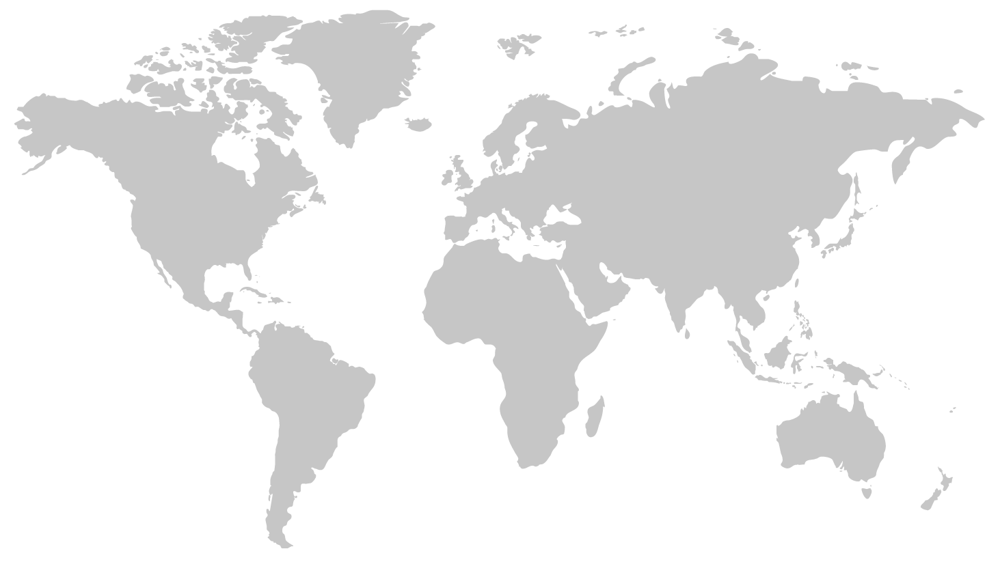

Phase
1
실행 설계
PAGE 21–25무엇을 제한할 것인가
제약
거버넌스
방법론
과거 경험
Roll-out
무엇을 제한할 것인가
어떻게 7개월에 가능한가
어떻게 안전하게 가동하는가
7개월 일반 구축 통상 대비 1.5~3배 압축
24h 1분 정지도 손실
롯데케미칼 · 정밀화학 · 첨단소재

6국 거점 · 110국 수출
롯데케미칼
롯데정보통신 (그룹 SI)
SAP 본사 + Value Assurance
단일 법인 · Big Bang
10개월 빅뱅 도입 · 롯데케미칼 단일 법인 SAP R/3 출발
축적 · 단일 법인 전환 경험자체 운영 · 환경 시스템 확장
석유화학 선도 도입 · 자체 구축 · Greenhouse Gas & Energy Management
축적 · 자체 운영 경험3사 통합 · Roll-out + 통합형 컨버전
14년 축적 경험을 기반으로 비대칭 환경의 3사 동시 안착 — Roll-out × Big Bang 데이터 이관 2축 결합
도달점 · 3사 통합 실행 기반2003 SMART · 2010 GEMS 두 운영 경험이 결합되어 2017 S/4HANA 3사 통합 Roll-out의 실행 가능성을 만들었다
단일 법인 빅뱅 경험은 본 사례의 실행 기반이지만 3사 동시 전환에는 그대로 복제 불가
단일 법인 빅뱅과 본 사례의 조건은 규모·동시성·다운타임에서 결정적으로 다름
기준 법인에 과거 경험을 활용하고 3사 순차 확산으로 다운타임·일정 동시 통제
전체 모듈·법인 일시 전환
3사 동시 전환 시 다운타임 리스크 과대 → 부적합
모듈·부서별 단계 전환
7개월 일정 내 단계 분할 불가 → 부적합
1개 시범 → 본격 확산
시범 후 확산 일정상 7개월 불가 → 부적합
기준 법인 구축 → 타 법인·거점 확산
4 조건 모두 충족 — 롯데케미칼 기준 → 정밀화학·첨단소재 확산
Brownfield 성격
기준 법인 롯데케미칼 SAP ECC 자산 그대로 이관
→ 신규 그린필드 대비 분석·설계·구현 분량 대폭 축소
2003 SMART · 2010 GEMS
사용자 교육·변경관리 부담 신규 도입 기업 대비 현저히 낮음
→ 사용자 경험과 커스터마이징 자산 재활용
롯데정보통신
외부 SI 공모·선정·온보딩 절차 생략
→ 그룹 차원 IT 자산·인력 풀 즉시 동원
표준 컴포넌트
Fit-Gap Analysis · Migration Planning Workshop · Go-Live Readiness Check
— 자체 방법론 개발 없이 검증된 절차
Business Process Reengineering · 공통 표준화
기준정보·재무회계·구매·물류
3사 공통 표준 프로세스 재설계 · SAP 글로벌 베스트 프랙티스 활용
설정 변경 · 차별성 보존
각 사 본연 경쟁력·특화 프로세스
SAP 표준 위에서 부분 변형 적용 · 산업 특성 유지
EAI 외부 연계 · 단일 코어 확장
비SAP 주변 시스템 — SCM·MES·PLM·LIMS·EHS·GEMS
EAI 기반 연계 · 다음 31 sap-platform-hub 연결
패키지 구현의 가장 큰 위험은 설정 오류 · Baseline과 변경관리로 Scope Creep 통제
10모듈 × 수천 파라미터
MM·PP·PM·QM·SD·CO·FI·HR·GRC·EHS 10모듈
각 모듈 수십~수백 마스터 파라미터
→ 패키지 구매 핵심은 '파라미터 조정 + 연계'
Configuration 위험 본질적 축소
13년 누적 SAP ECC Configuration 자산
컨버전 방식으로 이관
→ 신규 그린필드 대비 리스크 본질적 축소
7개월 압축 일정 가능 결정적 요인
10개 핵심 모듈
3사 통합
공급망
3사 통합 동기화
제조실행
공정 데이터 수집
제품관리
화학 제품 생명주기
품질실험
화학 분석 통합
환경안전
경계 위·화학물질
에너지
2010 자체 구축
구축 Roll-out × Migration Big Bang 2축 결합 + 테스트 5종 + SAP VAS 3요소
롯데케미칼 기준 법인 → 정밀화학·첨단소재 순차 확산 (박제성 인용·강의 자료 본 단계 3장)
다운타임 단축(114h → 52h) 단일 KPI는 Big Bang 데이터 이관 시사 (강의 자료 17p)
10모듈 각 기능 단위 + Configuration 파라미터별 검증
S/4HANA ↔ 비SAP EAI 검증·3사 모듈 간 통합
VAS Migration Planning Workshop·Go-Live Readiness Check
Key User 실제 업무 시나리오·"회계부서 박수" 정성 표현
기존 SCM·MES·PLM·LIMS·EHS·GEMS 환경 공존 검증
Fit-Gap Analysis · 동종 사례 분석 · 다운타임 진단 (114h 도출)
Migration Planning Workshop · 모의 컷오버 rehearsal
Go-Live Readiness Check · Value Realization Service
동종 사례 평균 다운타임 예측
-54% · 약 62시간 단축
NCC 핵심 공정 62시간 추가 가동 확보
110국 수출 채널 주문·출하 흐름 유지
재가동 시 공정 안정화·에너지 비용
공정 정지·재가동 시점 안전사고 ↓
SAP VAS 사전 진단 · 114h→52h (-54%)
3사 본연 경쟁력 유지 · Customizing 트랙 보존
단계적 데이터 검증 · 병행 운영 기간 · 사용자 교육
단일 SAP 플랫폼 일원화 · 2018+ 그룹공통시스템 시너지
13년 SAP 자산 · 통합형 컨버전 · "회계부서 박수"
SAP 직접 계약 + 그룹 SI 협상력 · 2018.12.19 라이선스 추가 의결
Step 3의 핵심은 빠른 구축이 아니라 4 원칙 동시 통제
기존 자산 진화적 활용
2003 SMART → 2010 GEMS → 2017 S/4HANA 1610
단일 법인 Big Bang에서 3사 Roll-out + 통합형 컨버전으로 진화
표준화와 차별성 동시
BPR (공통 표준화) + Customizing (본연 경쟁력 보존)
+ Add-on (외부 시스템 연계) 3트랙 균형
리스크 사전 통제
다운타임 진단 114h → 단축 52h (-54%)
테스트 5종 + VAS 3 단계 · 리스크 사전 진단·계량화·외부 자원 동원
그룹 자원 + SAP 중심 코어
그룹 SI (롯데정보통신) + SAP 본사 직접 협력
S/4HANA 단일 디지털 코어 + 주변 6 시스템 EAI 연계